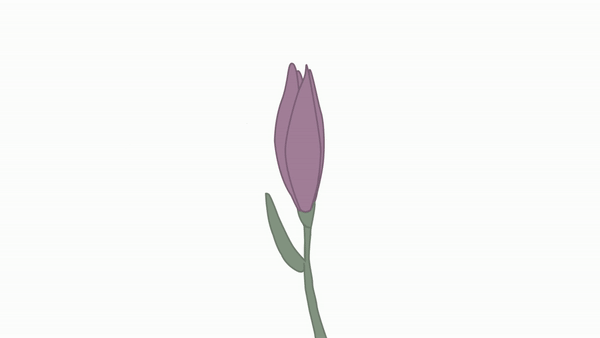

In onze podcast LIFECAST duiken we in de wereld van dilemma's.
We lezen jullie verhalen en geven onze eerlijke mening en advies, gebaseerd op onze eigen ervaringen en levenslessen.
Of je nu vastzit in een ingewikkelde situatie of gewoon benieuwd bent naar wat anderen meemaken, wij staan klaar met een
flinke dosis humor, eerlijkheid, en soms een tikkeltje ongezouten advies.
Wie zijn wij
Wij zijn de stemmen achter LIFECAST, gewone mensen met een
ongewoon talent om eerlijk, scherp en met humor te praten over de struggles van het leven.
Wat begon als een avond vol gesprekken over liefdesdrama's, werkstress en alles daartussenin,
groeide uit tot een podcast waar jouw verhalen centraal staan.
Wij lezen jullie dilemma's, delen onze ongefilterde meningen en geven advies dat soms lief,
soms pittig, maar altijd eerlijk is. Geen mooipraterij, geen filter, gewoon het soort
commentaar dat je vrienden misschien nét niet durven te geven.
Afleveringen
Elke aflevering van LIFECAST staat in het teken van echte verhalen en herkenbare dilemma's.
We bespreken jullie inzendingen, delen onze eigen ervaringen en geven advies, soms met een
flinke portie humor, soms recht uit het hart.
Of je nu behoefte hebt aan advies, gewoon wilt lachen om de struggles van het leven, of
benieuwd bent hoe anderen met hun problemen omgaan. hier in onze afleveringen komt alles voorbij.
Meer informatie